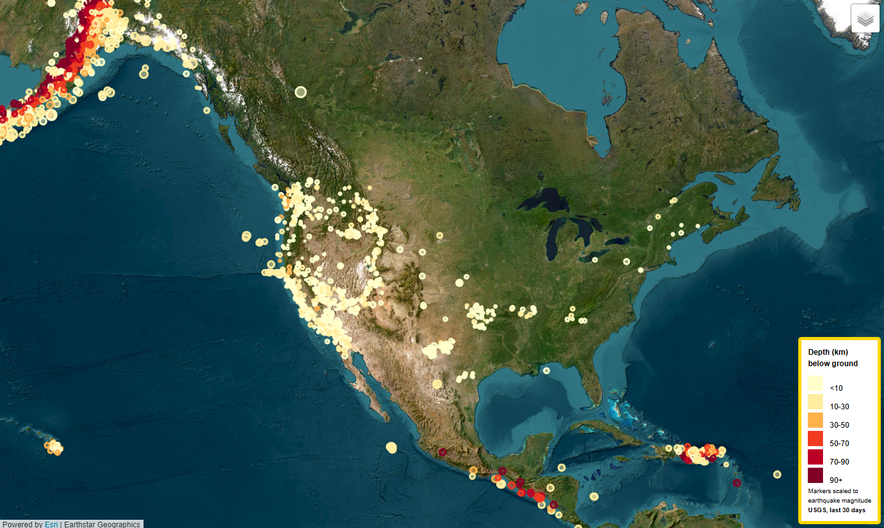

An interactive map built with Leaflet.js and D3.js, visualizing global earthquake data from the USGS in real time. Features include a heatmap, tectonic plate boundaries, and detailed popups for magnitude, depth, and location—designed to raise public awareness and support geological research.
This was my first-ever map, and I still have a soft spot for it. It shows the last 30 days of global earthquakes in real time, layered with tectonic plates. Any time I hear about a quake on the news, I still pull it up. It was a gateway drug to web mapping, feeding an already full-blown cartographic obsession.
Project Links
Project Overview
This project visualizes global earthquake activity from the past 30 days using real-time data from the USGS GeoJSON API. Built with JavaScript, Leaflet, and D3, the map integrates multiple data layers—earthquake points, tectonic boundaries, and a heatmap to show seismic hotspots.
Users can explore detailed quake info by clicking on markers and toggling layers. The tool is designed to make seismic trends easy to grasp, helping inform both the public and policy conversations.
It demonstrates my ability to combine live data, mapping libraries, and layered interactivity to deliver accessible, science-driven visual storytelling.
Gallery
 Earthquake markers: Real-time USGS data from the past 30 days, with markers colored by depth and sized by magnitude.
 Tectonic plates and heat map: Overlay of earthquake markers and
heat map, highlighting seismic hotspots and plate
boundaries.
Tectonic plates and heat map: Overlay of earthquake markers and
heat map, highlighting seismic hotspots and plate
boundaries.
 Tectonic plates on ESRI’s National Geographic base map: An
artistic visualization of Earth’s major plate boundaries.
Tectonic plates on ESRI’s National Geographic base map: An
artistic visualization of Earth’s major plate boundaries.
References
Dataset created by the United States Geological Survey.